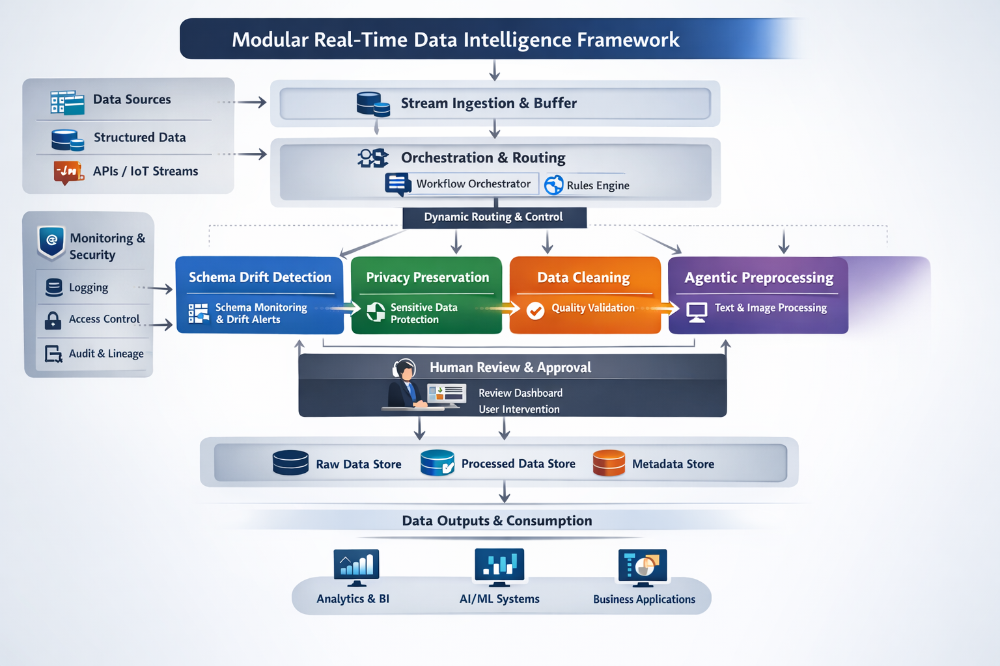

Research Domain
CORE PROBLEM
Streaming pipelines fail quietly. Incoming data changes faster than conventional systems adapt — breaking dashboards, violating privacy, and eroding trust in real-time decisions.
- Silent schema drift breaks downstream APIs and models
- Privacy exposure occurs in transit, before storage protection
- Poor structured quality reduces analytics confidence
- Unstructured text and images need adaptive preprocessing
OUR RESPONSE
A modular preprocessing layer sitting upstream of your pipeline — detecting issues early, applying protection, and routing data before downstream damage occurs.
- Real-time schema drift detection and routing
- Pre-storage sensitive attribute protection
- Automated cleaning with human-in-the-loop review
- Agent-based preprocessing for unstructured data
WHO BENEFITS
Four independent services. Any execution order. Fits your architecture.
LITERATURE SURVEY SUMMARY
Existing work addresses pipeline issues in isolation. No current system provides a unified, real-time, modular preprocessing layer combining all four dimensions.
- Kafka/Flink: strong infra, no quality layer
- Schema evolution: mostly batch-mode, not real-time routing
- Privacy: applied post-storage only
- Data quality: ML imputation not streaming-integrated
- Agentic AI: isolated agents, no coordinated pipeline use
IDENTIFIED GAP
No existing solution offers a modular, execution-order-flexible preprocessing service layer combining all four dimensions in real time with user-in-the-loop control.
What's missing
- Composable, non-siloed modules
- Pre-transit privacy protection
- Human review for risky records
- Unified unstructured handling
Our contribution
- Four independent services
- Attribute-level pre-storage privacy
- Staging queue + review workflow
- LLM + vision agent coordination
RESEARCH PROBLEM STATEMENT
How can we design a modular, composable preprocessing framework for real-time streaming data that detects and resolves schema drift, privacy exposure, data quality issues, and unstructured content complexity — without imposing a fixed execution order?
Each service operates as a standalone microservice deployable independently or orchestrated in combination.
Monitor structured data streams for added columns, removed columns, type changes, and renamed fields. Assign risk scores based on severity and route risky records to a staging area for human review before final acceptance.
Identify sensitive attributes in streaming records and apply suitable protection (masking, tokenization, suppression) before records reach storage or onward transfer — reducing exposure during transit.
Detect missing values, outliers, and invalid entries. Generate candidate corrective actions using rules, statistics, and ML. Allow users to confirm or override fixes. Track quality scores before and after cleaning.
Coordinate LLM-led agents for text preprocessing and benchmark-guided vision agents for image preprocessing. Adaptive execution order per record type. Outputs stored in structured format ready for downstream use.
Benchmark each service against realistic workloads. Measure latency overhead, detection accuracy, privacy preservation quality, and data quality score improvements against baseline systems.
Each service follows a four-stage pipeline. Click a stage to learn more.
Detect
Identify drift, sensitive fields, quality issues, or preprocessing needs in real time as records arrive. Each service runs its detector independently on the incoming data stream.
Architecture
- Service-oriented, event-driven design
- Kafka topics per service module
- Stateless services with Redis shared state
- Staging queues for deferred human decisions
Key design advantage
The four services are independent. Users can adopt one module only, combine selected modules, or arrange execution order to match their pipeline — no lock-in to a fixed sequence.
HIGH LEVEL ARCHITECTURE DIAGRAM
Overview of the DataIntel streaming preprocessing framework.

Schema Drift Detection
Detects added columns, removed columns, type changes, and renamed columns in structured data streams.
- Real-time schema monitoring
- Risk scoring by severity
- Routing of risky records to staging
- User review before final acceptance
Privacy Preservation
Finds sensitive attributes and applies suitable protection before storage or onward transfer.
- Attribute-level sensitivity identification
- Privacy action before storage
- Reduced exposure during transit
- Retained analytical value
Structured Data Cleaning
Detects quality issues and recommends corrective actions using rules, statistics, and ML.
- Missing value and outlier detection
- Suggested fixes with user choice
- Automatic fill for unresolved cases
- Updated quality score after cleaning
Agentic Preprocessing
Handles text and image streams through coordinated agents that prepare unstructured data for downstream use.
- LLM-led orchestration for text agents
- Benchmark-guided image agents
- Adaptive execution order per record
- Structured output storage